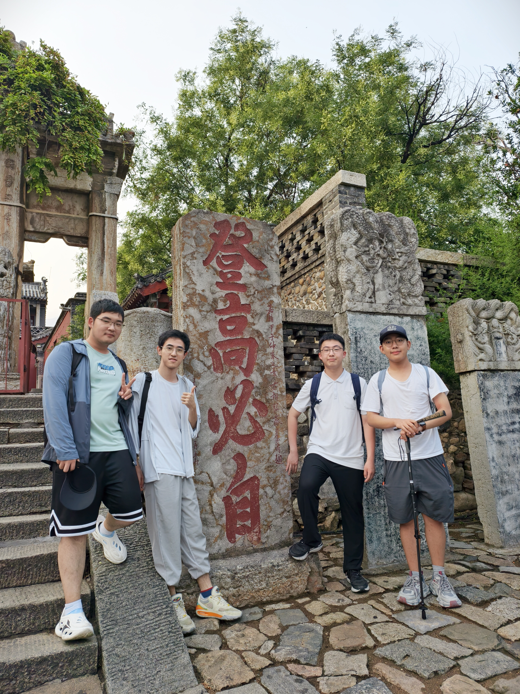
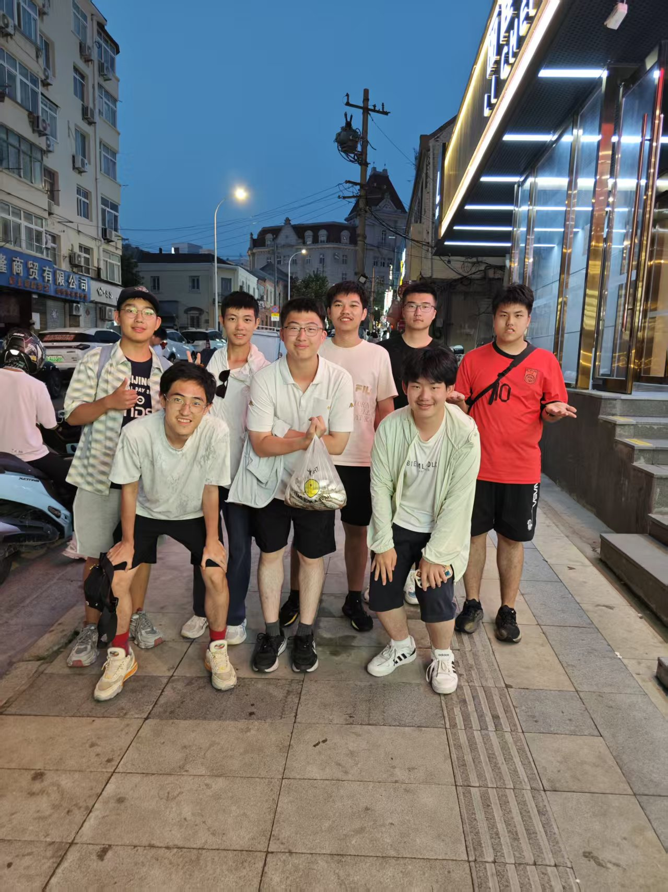
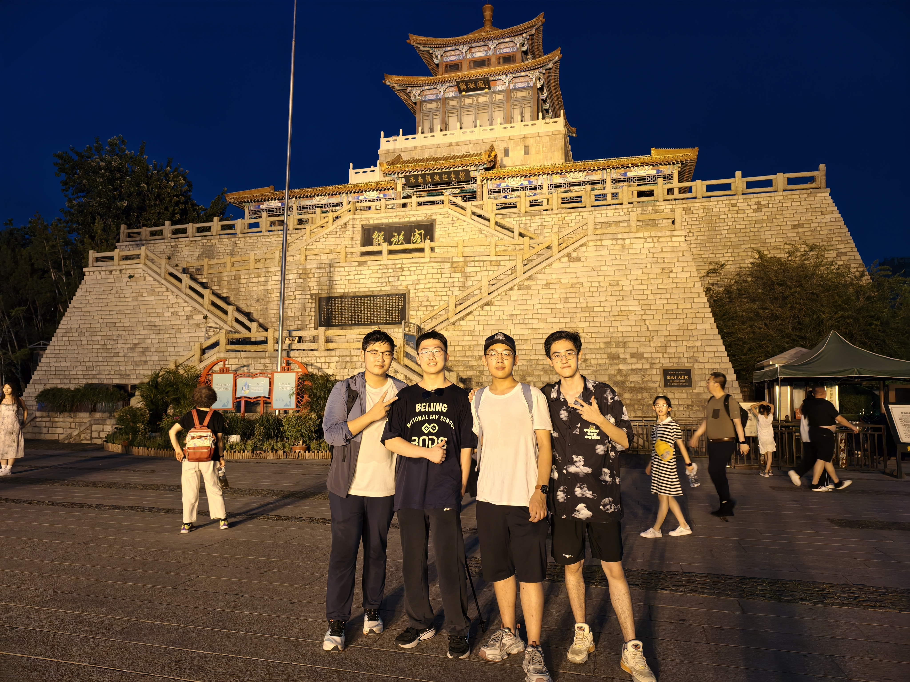
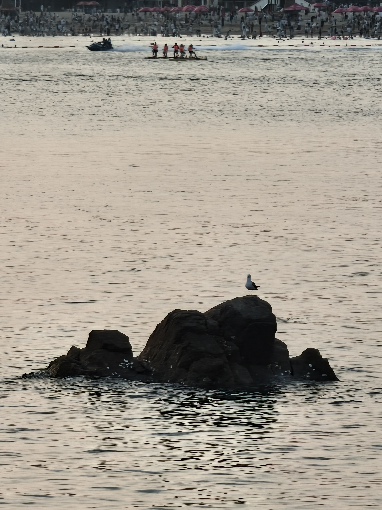

青岛与泰山




住在泰山脚下总是方便的，跻着拖鞋踏过石板，红门立在眼前。臆想着路过的行人对我们的空手无杖和脚底拖孩报之惊诧的目光，步履便更加轻盈了。
到泰安的下午，就到红门门口瞅了瞅。一块“登高必自”碑顿时打破了旅行和生活的割裂感，情不自禁地便笑了出来。是熟悉感（回想过往的种种）给予我们这种冲动，还是陌生感（觉得它不应该出现在这里）让我们本能的用笑容抵御错位的荒谬？
登山有两种方案，坐车到中山门再爬，或者直接从红门开始爬，为了清晨清朗的气温，我们选择了后者，避免7点才能坐车的拥堵
由于久在诗词里与泰山的本尊有了一层隔膜，我们在红门脚下敬仰南天门的时候，抱着一丝自傲，也有好奇。如今回想起来，泰山的攀爬，是不同于任何一种山峰的。泰山的设施在现代极为完善，两段一台，五段一店，有御寒服，有宾馆，有各种商铺。也得益于连锁店极为完善的制作流程，你甚至可以看到瑞幸蜜雪和开封菜。这就导致了爬山的人几乎没有后顾之忧，所担心的只有且仅有两个，体力和意志。极致的基建使得游客有着极致的体验，不会有人说泰山爬不下来是因为没有带水，是因为没有卫生间，大家只会怪自己体力毅力不行。因此，泰山旅游形成了一种独一无二的特色，形成了远近闻名的口碑。泰山就是纯粹登山的体验，他没有野山的野道的探险之乐，没有漫山红透的红叶，没有奇峰陡崖的危险；他就是台阶，纯粹的高度抬升，一步步向上，不需要你去思考，体力在登阶面前变得可以量化，只需要前进，前进。也正因如此，登顶的快感是无与伦比的，当体力的消耗大过思考的能量，当欣赏景色变为单纯的拍照，只有南天门玉皇顶是唯一的目的。
当然，如果将自己的身体当做一个机器，排布自己的体力，精进自己的步态，机械的重复，科学的补水，没有任何的兴奋浪费自己的精神，那么也许，你会体会到泰山自古以来的文化生态。泰山从古代开始便是皇帝封禅的场所，也是名人登游的地域，这就逐渐形成了一种独有的文化生态。加之有思考的攀爬便会成为一种共鸣的同步，不仅仅是身体在山中，精神也在这种生态里面随之感染。校园之中反复磨练的记忆从虚无的纸面投射到现实，每当看到熟悉的字句，诗词便从脑海里汩汩流出，满口生香。一路走来，我们看到了两篇作文，两篇大散文，四个古诗词。一个地方的精神是真的能具象在体感之中的，泰山以其厚重和包容，接纳了我，平复了内心的纷扰。一座山中的名人石刻、飞亭楼台，与山石草木一同渲染出古朴的气氛：林间鸣叫的飞鸟，云边扑越的雄鹰，石刻油漆底下的苍劲。
泰山远不止如此。面对远在天边的南天门，向上看是十八弯的无尽长梯，下看是十八弯来时陡峭的历程，内心却是受挑战的悸动。你会看到树影底下缀满了人群，排成一串如同熟透的葡萄；你会看到一旁没有石阶的土道，挑山工们正负着扁担不紧不慢地向下赶；如果下雨，七千阶如同瀑布；如果起雾，山顶一臂见丈，其他的都看不见。也许你是夜爬，赌上体力期望明天的日出；也许你是清晨开始，下山时与人群逆流。从来不是征服泰山，而是体验泰山；我不会说这是一场朝圣之旅，因为体力消耗殆尽的时候不会有神圣之感，但在从山上下来，再次回想的时候，确实与不同以往了。